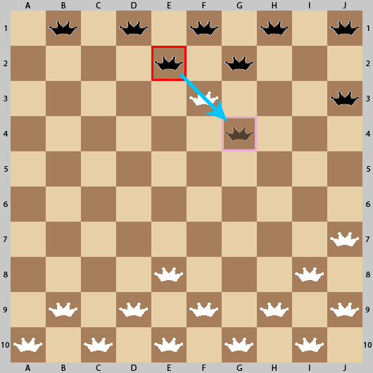
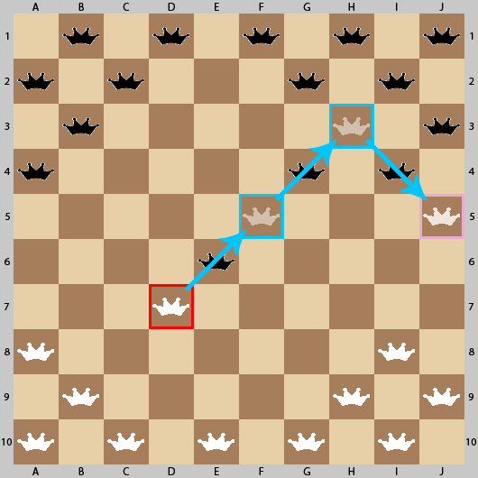

Obyčejný skok
- Při obyčejném skoku je přeskočen pouze jeden soupeřův kámen (viz herní situace na obrázku 2)
- Červeně je zobrazen kámen, který skáče
- Modrou šipkou je zobrazen směr skoku
- Růžově je zobrazeno pole, na kterém po provedení skoku skončí hráčův kámen
- Po provedení skoku bude černý kámen z pole E2 přesunut na pole G4 a bílý kámen na poli D3 bude odstraněn z hrací desky
- Černý hráč již nemůže dále skákat. Na tahu bude bílý hráč
Pozn.: Na obrázku 2 bylo možné zahrát i jiné tahy (F1 na F5 a G2 na D4) |

Obrázek 2. - obyčejný skok |
Vícenásobný skok
- Při vícenásobném skoku jsou zajmuty dva nebo více soupeřových kamenů (viz herní situace na obrázku 3)
- Červeně je zobrazen kámen, který skáče
- Modrou šipkou je zobrazen směr skoku
- Růžově je zobrazeno pole, na kterém po provedení vícenásobného skoku skončí hráčův kámen
- Po provedení skoku z D7 na F5 bude z hrací desky odstraněn soupeřův hrací kámen na poli E6. Hráč má stále možnost skákat, proto pokračuje v tahu. Je proveden skok z F5 na H3 a je odstraněn soupeřův kámen na poli G4. Po provedení 2. skoku má hráč stále možnost skákat a proto zůstává na tahu. Je proveden skok z H3 na J1 a z hrací desky je odstraněn kámen na poli I4
- Hráč již dále nemůže skákat, proto je po provedení vícenásobného skoku na řadě černý hráč
|

Obrázek 3. - vícenásobný skok |